奔奔王国 · 大世界三档截帧分析
分析日期：2026-10-09。采集接口为模拟器 Vulkan／ANGLE 回放。文件名中的“最低／高／最高”作为档位标识。
目录
- 总览与三档画面
- 绘制流程与差异
- 功能对比与具体例子
- 狮子：最高档增加黑色描边
- 紫色城堡：最高档增加彩色竖向光片
- 护盾与复杂特效
- 贴图尺寸、Mip与格式
- 普通资源与GPU骨骼动画
- 后处理与性能边界
总览与三档画面
最低档同时降低渲染分辨率、部分源贴图规格，并取消角色描边及部分建筑特效层。最高与最低的骨骼本体数量、UI绘制次数和代表模型面数一致。
“高”档仅记录4次显示／拷贝绘制，没有记录大世界模型和材质绘制。 它能展示当时的游戏画面，不能拿4次绘制或40.85 MiB与其他两档做性能／资源对比。这是截帧范围差异。
| 指标 | 最低 | 高 | 最高 |
|---|
| 样本用途 | 完整大世界回放 | 只有显示层，画面参考 | 完整大世界回放 |
| 主场景分辨率 | 648×1152 | 场景绘制未记录；显示输入756×1344 | 1080×1920 |
| 主场景绘制次数 | 198 | 未记录 | 237 |
| 整份截帧绘制次数 | 202 | 4 | 241 |
| 主场景提交三角形（含实例与重复通道） | 40,182 | 无法统计 | 52,820 |
| 骨骼本体绘制次数 | 14 | 无法统计 | 14 |
| 额外骨骼描边绘制次数 | 0 | 无法统计 | 6 |
| UI图集与界面绘制次数 | 48 | 无法统计 | 48 |
| 主场景采样纹理数量 | 113 | 无法统计 | 121 |
| 主场景采样纹理中有Mip | 25 | 无法统计 | 27 |
| 采样纹理描述容量 | 351.86 MiB | 无法比较 | 389.38 MiB |
| 全部纹理描述容量（含显示目标） | 397.38 MiB | 40.85 MiB（仅显示层） | 450.08 MiB |
容量按RenderDoc纹理描述去重求和；不是进程峰值显存，也不是实际真机内存。提交三角形计入实例、屏外物体和额外描边，不能理解成唯一模型面数。
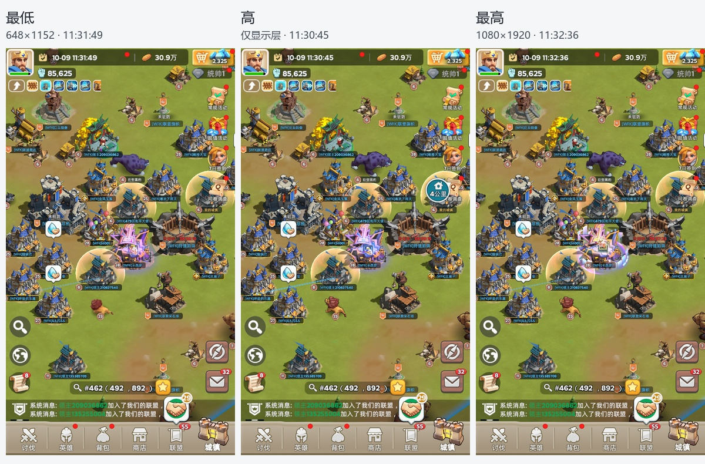
三份画面均位于地图 #462（492，892）附近：高11:30:45、最低11:31:49、最高11:32:36。最低与最高相差47秒。71组同源网格在近似相同屏幕位置匹配；动态角色姿态、特效周期和聊天数字仍会变化。
最低主画面宽高各为最高的0.6，像素数为36%。UI也绘入这张648×1152目标，再放大显示，所以UI清晰度一起下降。 显示层的1080×1920目标不能当作最低档的实际场景分辨率。“高”档拷贝输入为756×1344，宽高为1080×1920的0.7，随后放大到1080×1920；由于缺少场景绘制，只能确认其显示输入尺寸，不能核实场景生成过程。
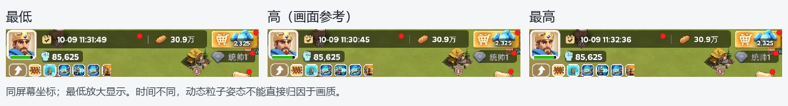
绘制流程与差异
两份完整样本的主场景都只有一张颜色目标＋D24S8深度目标，按顺序绘制地面、骨骼模型、建筑图块、特效、标牌及UI。主体建筑大量采用预绘制精灵图集，而角色和行军物体使用真正的骨骼网格。捕获还包含模拟器的横向预览和手机显示表面。
| 绘制类别 | 最低次数 | 最高次数 | 最高−最低 |
|---|
| 地面 | 5 | 5 | +0 |
| 骨骼模型 | 14 | 14 | +0 |
| 角色描边 | 0 | 6 | +6 |
| 建筑及场景图块 | 36 | 40 | +4 |
| 材质及粒子特效 | 45 | 73 | +28 |
| 标牌粒子 | 48 | 48 | +0 |
| 附加遮罩叠加 | 0 | 1 | +1 |
| 区域边界 | 2 | 2 | +0 |
| UI图集与界面 | 48 | 48 | +0 |
最高档比最低多39次大世界绘制：材质／粒子特效净多28次，角色描边多6次，建筑图块多4次，附加遮罩叠加多1次。骨骼本体和UI绘制数量没有减少。 分类基于Shader算法、几何布局和逐绘制截图；特效与UI标牌相邻，不代表它们都是整屏处理。
最高多提交12,638个三角形，其中11,940个来自把部分角色本体再绘制一遍做描边，约占新增三角形的94.5%。角色本体的提交几何仍是两档各16,815个三角形。
下面按构成顺序展示最高档，图片横向排列。E300是骨骼本体结束，E351含描边，E880含建筑和材质特效，E1343含完整UI。
| 地面＋骨骼本体 · E300 | 增加描边 · E351 | 建筑＋特效 · E880 | UI完成 · E1343 |
|---|
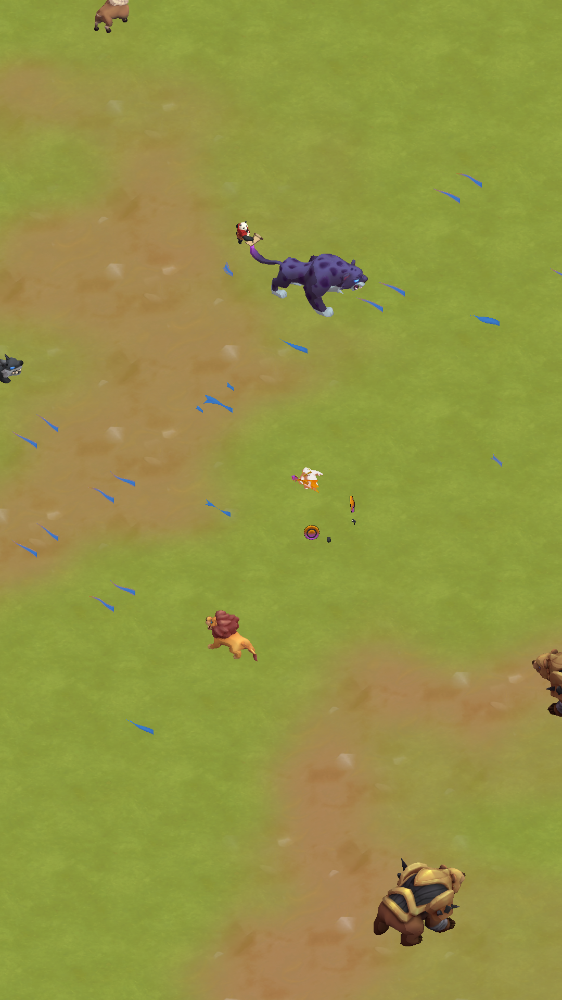 | | 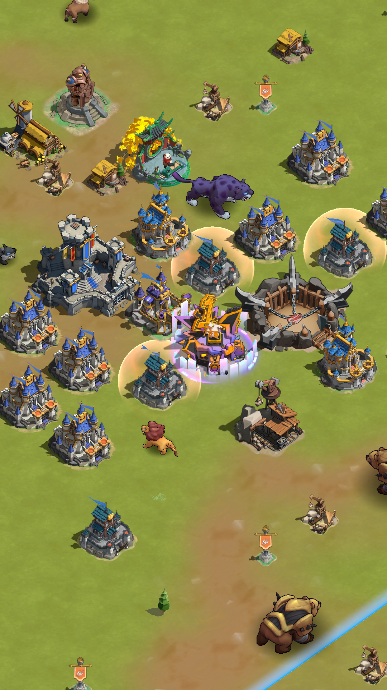 | 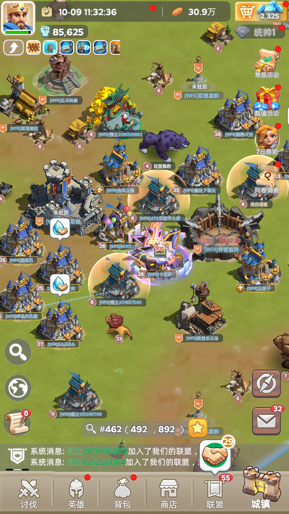 |
功能对比与具体例子
| 功能 | 最低 | 最高 | 核对依据 |
|---|
| 整体分辨率 | 宽高0.6；UI同样受影响 | 宽高1.0 | 主目标描述＋UI输出绑定 |
| 角色贴图 | 9张逐像素匹配的半尺寸版本 | 对应完整尺寸；均保留Mip | 最低mip0＝最高mip1 |
| 地面素材贴图 | 15张逐像素匹配的半尺寸版本 | 对应完整尺寸；均保留Mip | 最低mip0＝最高mip1 |
| 建筑与UI大图集 | 代表大图集2048²、单层Mip | 代表大图集2048²、单层Mip | 尺寸、格式和像素相同 |
| GPU骨骼动画 | 本体14次；保留4影响骨骼循环 | 本体14次；同核心代码和13张数据图 | Shader SHA-256及输入布局 |
| 角色黑色描边 | 没有额外描边通道 | 6次蒙皮＋法线外扩＋纯黑输出 | 同帧关闭后3249个RGB像素变化 |
| 中央紫色城堡竖向彩色光片 | 未见该家族绘制 | 25次；视角渐变＋颜色图＋通道Mask | 同帧关闭后12727个RGB像素变化 |
| 金色护盾 | 保留相同Shader家族 | 保留相同Shader家族 | VS/PS原始代码哈希相同 |
| 基础光斑、UV滚动与四采样特效 | 仍大量保留 | 仍保留并叠加额外层 | 对应家族逐代码核对 |
| 复杂素材扰动／遮罩家族 | 代表PS 3个静态采样点 | 对应扩展PS 5个静态采样点 | 代码有额外素材采样和UV运算 |
| 建筑图块提交 | 36次，468个提交三角形 | 40次，468个提交三角形 | 更多提交拆分，几何总量相同 |
| 后处理／多重采样 | 未识别到Bloom等链；主目标1×采样 | 未识别到Bloom等链；主目标1×采样 | 通道依赖、采样源、Shader及纹理描述 |
狮子：最高档增加黑色描边
本体最低E228、最高E229：均为1,785面、1,162个引用顶点，GPU蒙皮核心VS／PS代码完全相同。角色颜色图从128²升至256²，最高另加E316描边：再做一次蒙皮，将法线方向外扩，然后输出黑色。六组描边共7个实例，增加11,940个提交三角形。
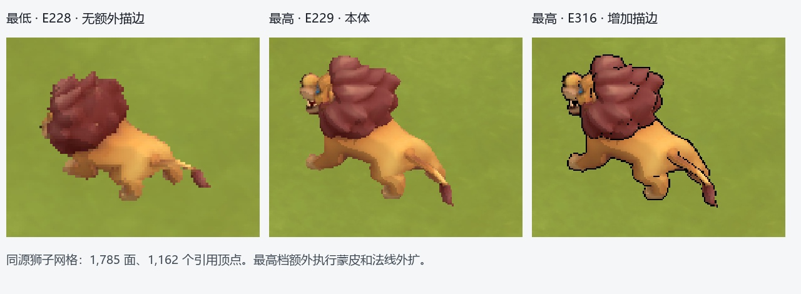
独立回放副本关闭6次描边绘制后，3,249个最终RGB像素变化，狮子的黑色外轮廓明确消失。 原样副本与原始截帧逐字节一致；这个开关验证只确认描边贡献，不代表游戏提供相同的独立开关。
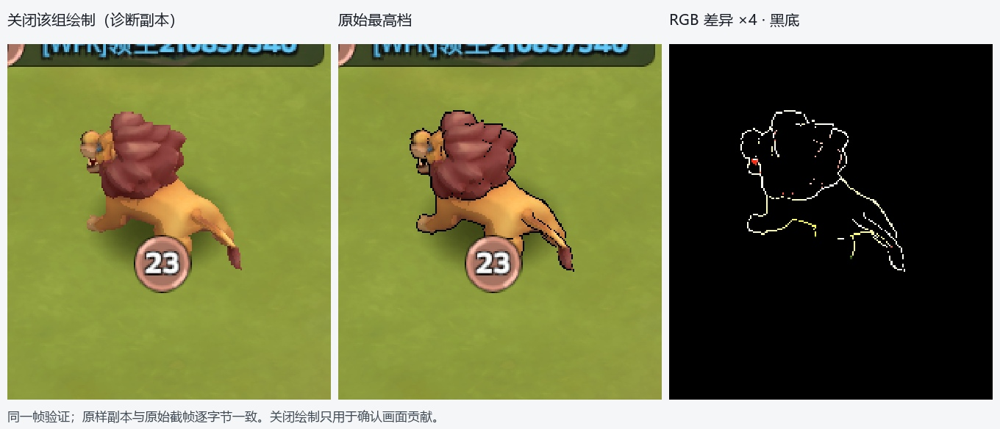
紫色城堡：最高档增加彩色竖向光片
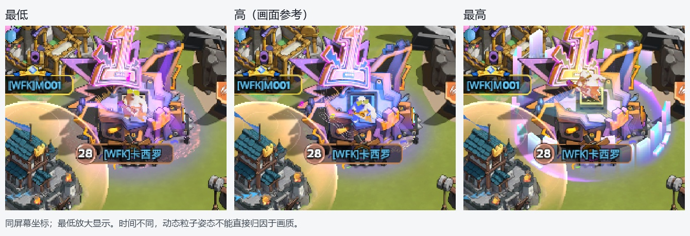
最高Shader 659892／659893提交25次，每次10面，沿中央城堡周围布置竖向光片。PS使用法线与视角方向的点积作渐变，采样256²颜色渐变图659426与128²灰度Mask138506，叠加顶点色、强度、通道Mask与透明度整形。最低没有这个Shader家族绘制。
同一帧关闭这25次绘制后，12,727个RGB像素变化，彩色竖向光片消失；底部的环状光晕和其他装饰仍保留。 因而此差异可以归到这组局部材质特效，不能称为Bloom开关。
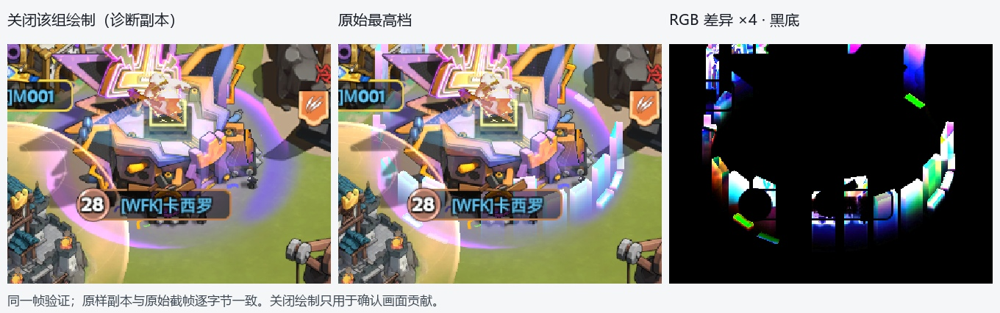
护盾与复杂特效
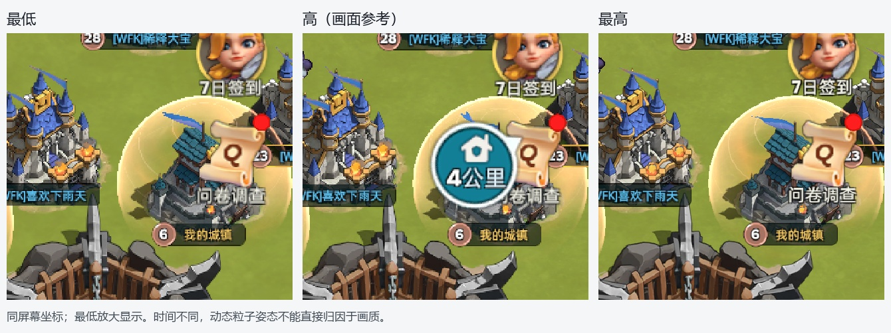
金色护盾最低690584／690585与最高140146／140147的VS、PS原始代码哈希相同；两档均9次绘制，使用相同512²噪声657695等素材。不能概括成“低配关闭所有复杂特效”。
另一通用家族最低690409／690410为9次、PS有3个静态取样点；最高扩展版660499／660500为8次、PS有5个静态取样点，增加素材UV扰动／遮罩输入。静态取样点包含分支，并不等于每像素固定执行次数。更复杂的3至6采样家族也在最高出现，但不同特效时刻会改变个体粒子数量。
基础光斑（最低690392／690393与最高138775／138776）、四采样环形特效（最低690398／690399与最高613003／613004）核心代码相同。最高还多用64×32边缘光片、512×256光条等素材。标牌粒子两组各24次，两档次数相同但本帧几何数量略有变化。
贴图尺寸、Mip与格式
24对同源贴图已逐字节核对：最低mip0完全等于最高mip1。 最低宽高各减半，Mip链也少最顶层。24对合计从最高45.25 MiB降到最低11.31 MiB，减少33.94 MiB。包含15张地面素材和9张骨骼模型颜色图。
| 代表贴图 | 最低 | 最高 | 规格与证据 |
|---|
| 狮子颜色图 | 688234 · 128² · 8层 | 707304 · 256² · 9层 | RGBA8 sRGB；最低顶层等于最高Mip1 |
| 持武器角色颜色图 | 688246 · 128² · 8层 | 707316 · 256² · 9层 | RGBA8 sRGB；逐字节匹配 |
| 地面细节图 | 688288 · 512² · 10层 | 707358 · 1024² · 11层 | RGBA8 sRGB；逐字节匹配 |
| 地面混色素材 | 688458 · 256² · 9层 | 707524 · 512² · 10层 | RGBA8 sRGB；逐字节匹配 |
| 地面特殊输入 | 688518 · 128² · 8层 | 707582 · 256² · 9层 | RGBA8 UNORM；逐字节匹配 |
| 小型行军素材 | 688983 · 128² · 8层 | 708039 · 256² · 9层 | RGBA8 sRGB；逐字节匹配 |
| 建筑图集 | 656891 · 2048² · 1层 | 656891 · 2048² · 1层 | RGBA8 sRGB；像素相同 |
| 建筑／装饰图集 | 658964 · 2048² · 1层 | 658964 · 2048² · 1层 | RGBA8 sRGB；像素相同 |
| UI图集 | 136252 · 2048² · 1层 | 136252 · 2048² · 1层 | RGBA8 sRGB；像素相同 |
| 护盾噪声 | 657695 · 512² · 1层 | 657695 · 512² · 1层 | RGBA8 sRGB；像素相同 |
| 光条素材 | 659343 · 256×128 · 1层 | 659343 · 256×128 · 1层 | RGBA8 sRGB；像素相同 |
| 骨骼矩阵数据 | 13张 · RGBA16F · 单层Mip | 相同13张且像素相同 | 合计2.05 MiB；两档相同 |
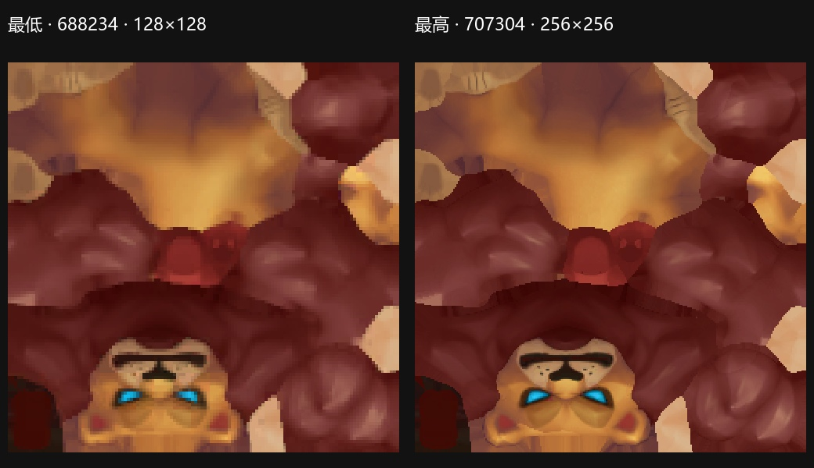
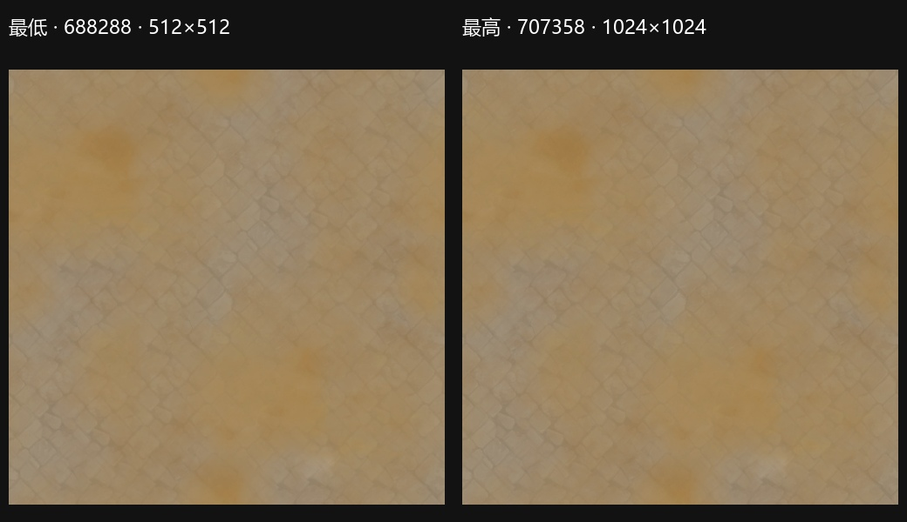
建筑图集和UI并未跟着统一降规格。 例如656891、658964、136252两档像素完全相同，均2048²、RGBA8 sRGB、单层Mip。单张描述容量16 MiB。两份清单都存在19张宽度至少2048、单层Mip的纹理，不能把贴图策略理解成全部素材统一降一档。
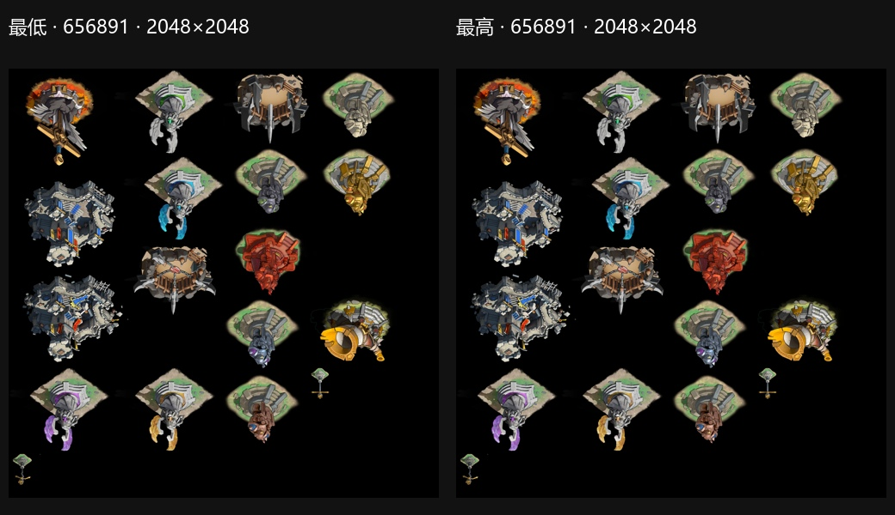
| 使用路径 | 最低采样纹理 | 最低有Mip | 最高采样纹理 | 最高有Mip | 说明 |
|---|
| 地面路径 | 21 | 15 | 21 | 15 | 基础素材有Mip；控制／颜色辅助输入部分单层 |
| 骨骼本体路径 | 23 | 9 | 23 | 9 | 计入13张无Mip骨骼数据图＋颜色图 |
| 建筑／场景图块 | 17 | 0 | 17 | 0 | 大图集和噪声均单层 |
| UI图集与界面 | 13 | 0 | 13 | 0 | 图集／字体／辅助纹理单层 |
| 材质与粒子特效 | 36 | 1 | 43 | 3 | 绝大多数无Mip，存在少数例外 |
| 标牌粒子 | 2 | 0 | 2 | 0 | 128²及64²单层素材 |
分类内去重，不同路径会共享同一纹理，横向总和不能当作全帧唯一纹理数量。Mip存在还需结合采样器：角色和地面代表输入允许访问完整Mip链，mip filter为Point，即选择单一Mip层；不能据此断言画面实际采样了哪一级。
截帧纹理格式均为RGBA8 sRGB／UNORM、RGBA16F、R8或D24S8；没有发现ASTC、ETC、BC或PVRTC。sRGB是颜色空间，不是压缩格式。 这些是模拟器回放可见格式，不能据此判断真机包源资源的压缩配置。
普通资源与GPU骨骼动画
| 资源代表 | 事件 | 面数 | 引用顶点数 | 说明 |
|---|
| 狮子 | 最低E228／最高E229 | 1,785 | 1,162 | 最高额外E316描边 |
| 持武器角色 | 最低E206／最高E207 | 1,218 | 1,062 | 两档同网格规格 |
| 另一角色本体 | 最低E213／最高E214 | 1,029 | 866 | 两档同网格规格 |
| 大型角色代表 | 最低E242／最高E243 | 2,522／实例 | 1,780 | 本帧2实例；最高重复描边 |
| 小型行军模型 | 最低E271／最高E272 | 152／实例 | 144 | 本帧5实例 |
| 另一行军模型 | 最低E278／最高E279 | 98／实例 | 108 | 本帧13实例 |
| 建筑精灵图块 | 最低E436／最高E508 | 2 | 4 | 主体用预绘制图集；一组可含多块 |
| 植被实例图块 | 最低E332／最高E392 | 2／实例 | 4 | 本帧128实例；另一次39实例 |
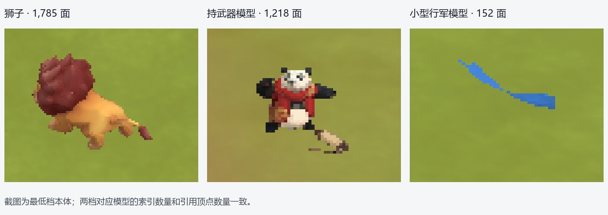
两档代表本体网格的面数、引用顶点数量相同。本次没有把尚未验证的模型LOD机制列作结论。
角色仍采用GPU Skinning＋骨骼矩阵纹理，最低没有切换成VAT。 顶点带骨骼索引与权重，Shader遍历4个影响，只处理权重大于0的项；每有效影响读取6组三／四通道纹理数据，组合两组三行矩阵后进行加权蒙皮，并更新法线。实例参数提供动画行位置、模型变换和颜色；行军模型本帧有5、13等多实例绘制。
13张RGBA16F骨骼数据纹理两档尺寸与内容全部相同，单层Mip，总描述容量2.05 MiB。典型狮子输入84×236，每行按3 texel矩阵布局可容纳28个矩阵槽，图高236是存储行数。矩阵槽容量不能直接当作真实有效骨骼数，存储行也不能直接当作某个动作的总帧数：还包含静态矩阵与动作布局，缺少源动画表时不作过度推算。
最高的描边会额外执行蒙皮；最低保留本体动画，只裁掉这次重复通道。植被图块采用2面网格做128／39实例绘制，其像素Shader相同，顶点Shader变体有差异，需要按代码和资源看待，不能把所有实例绘制都称作骨骼动画。
后处理与性能边界
两档主场景未识别到Bloom、SSAO、景深、运动模糊、FXAA／TAA或全屏LUT调色链。 没有Compute Dispatch，主颜色和深度目标均1×采样，没有MSAA目标。全景发光来自局部贴图、UV／颜色运算和混合；渐变图659426也只参与城堡光片材质，不是全屏调色LUT。
主场景直接把UI绘入颜色目标。外围有模拟器预览、手机画面拷贝和显示方向转换；这些表面不能串成游戏后处理链。只表示现有大世界截帧的路径，不能覆盖其他玩法或画质模式。
可以确认最低减少像素量、部分源图带宽／容量、重复蒙皮和特效层数。绘制次数和素材容量无法换算真机FPS或GPU毫秒；本报告没有把桌面回放耗时当作手机性能。特效仍有多层透明叠加，耗时大小需要真机计时确定。
详细数据、完整Shader分类和24对贴图清单见详细附录。图片使用相对路径，发送报告时保留两个Markdown与images目录即可。
打开详细附录
奔奔王国 · 大世界详细附录
本文件供技术核对。正文见三档对比报告。所有ResourceId仅在对应截帧中有效；不同ID通过代码／纹理内容匹配。
1. 文件和有效范围
| 档位 | 文件 | 绘制次数 | 用途 |
|---|
| 最低 | bbwg_大世界_最低.rdc | 202 | 完整大世界 |
| 高 | bbwg_大世界_高.rdc | 4 | 仅显示层 |
| 最高 | bbwg_大世界_最高.rdc | 241 | 完整大世界 |
2. 完整Shader家族
最低
| VS／PS | 分类 | 绘制数 | 代表EID | VS静态采样 | PS静态采样 | 裁切 | 实例累计索引／3 |
|---|
| 116148_116149 | UI图集与界面 | 46 | 891, 895 | 0 | 1 | 无 | 13356 |
| 612668_612669 | 建筑及场景图块 | 31 | 436, 476 | 1 | 2 | 有 | 118 |
| 162058_162059 | 标牌粒子 | 24 | 741, 742 | 0 | 1 | 无 | 288 |
| 162051_162052 | 标牌粒子 | 24 | 771, 772 | 0 | 1 | 无 | 672 |
| 690392_690393 | 材质及粒子特效 | 17 | 346, 352 | 0 | 1 | 无 | 102 |
| 690584_690585 | 材质及粒子特效 | 9 | 389, 395 | 0 | 2 | 无 | 6048 |
| 690409_690410 | 材质及粒子特效 | 9 | 444, 450 | 0 | 3 | 无 | 20 |
| 690398_690399 | 材质及粒子特效 | 7 | 360, 698 | 0 | 4 | 无 | 2069 |
| 690318_690319 | 骨骼模型 | 6 | 228, 235 | 6 | 1 | 无 | 11940 |
| 690352_690353 | 骨骼模型 | 5 | 271, 278 | 6 | 1 | 无 | 2434 |
| 612278_612279 | 地面 | 3 | 167, 183 | 0 | 7 | 无 | 36 |
| 659876_659877 | 骨骼模型 | 3 | 206, 213 | 6 | 1 | 有 | 2441 |
| 190_488 | 显示层 | 2 | 36, 1147 | 0 | 1 | 无 | 2 |
| 690383_690384 | 建筑及场景图块 | 2 | 332, 336 | 0 | 1 | 有 | 334 |
| 612780_612781 | 建筑及场景图块 | 2 | 380, 428 | 0 | 1 | 无 | 14 |
| 1263_1264 | 显示层 | 1 | 71 | 0 | 1 | 无 | 1 |
| 3279_3280 | 显示层 | 1 | 116 | 0 | 1 | 无 | 1 |
| 612292_612293 | 地面 | 1 | 174 | 0 | 6 | 无 | 2 |
| 612305_612306 | 地面 | 1 | 197 | 0 | 6 | 无 | 182 |
| 612628_612629 | 区域边界 | 1 | 307 | 0 | 6 | 无 | 2 |
| 662847_662848 | 区域边界 | 1 | 314 | 0 | 2 | 无 | 2 |
| 612700_612701 | 建筑及场景图块 | 1 | 322 | 0 | 2 | 无 | 2 |
| 614895_614896 | 材质及粒子特效 | 1 | 681 | 0 | 1 | 无 | 2 |
| 690674_690675 | 材质及粒子特效 | 1 | 733 | 0 | 1 | 无 | 84 |
| 690503_690504 | 材质及粒子特效 | 1 | 882 | 0 | 1 | 无 | 2 |
| 612335_612336 | UI图集与界面 | 1 | 988 | 0 | 0 | 无 | 8 |
| 612341_612342 | UI图集与界面 | 1 | 995 | 0 | 1 | 无 | 24 |
最高
| VS／PS | 分类 | 绘制数 | 代表EID | VS静态采样 | PS静态采样 | 裁切 | 实例累计索引／3 |
|---|
| 116148_116149 | UI图集与界面 | 46 | 1115, 1119 | 0 | 1 | 无 | 13356 |
| 612668_612669 | 建筑及场景图块 | 35 | 508, 548 | 1 | 2 | 有 | 118 |
| 659892_659893 | 材质及粒子特效 | 25 | 668, 670 | 0 | 2 | 无 | 250 |
| 162058_162059 | 标牌粒子 | 24 | 951, 952 | 0 | 1 | 无 | 336 |
| 162051_162052 | 标牌粒子 | 24 | 981, 982 | 0 | 1 | 无 | 720 |
| 138775_138776 | 材质及粒子特效 | 18 | 406, 422 | 0 | 1 | 无 | 400 |
| 140146_140147 | 材质及粒子特效 | 9 | 460, 466 | 0 | 2 | 无 | 6048 |
| 660499_660500 | 材质及粒子特效 | 8 | 516, 522 | 0 | 5 | 无 | 16 |
| 138997_138998 | 骨骼模型 | 6 | 229, 236 | 6 | 1 | 无 | 11940 |
| 139022_139023 | 角色描边 | 6 | 316, 323 | 6 | 0 | 无 | 11940 |
| 613003_613004 | 材质及粒子特效 | 6 | 908, 922 | 0 | 4 | 无 | 2033 |
| 612982_612983 | 骨骼模型 | 5 | 272, 279 | 6 | 1 | 无 | 2434 |
| 612278_612279 | 地面 | 3 | 168, 184 | 0 | 7 | 无 | 36 |
| 659876_659877 | 骨骼模型 | 3 | 207, 214 | 6 | 1 | 有 | 2441 |
| 190_488 | 显示层 | 2 | 36, 1379 | 0 | 1 | 无 | 2 |
| 612317_612318 | 建筑及场景图块 | 2 | 392, 396 | 0 | 1 | 有 | 334 |
| 612780_612781 | 建筑及场景图块 | 2 | 451, 499 | 0 | 1 | 无 | 14 |
| 481250_481251 | 材质及粒子特效 | 2 | 1061, 1103 | 0 | 3 | 无 | 6 |
| 1263_1264 | 显示层 | 1 | 71 | 0 | 1 | 无 | 1 |
| 3279_3280 | 显示层 | 1 | 116 | 0 | 1 | 无 | 1 |
| 612292_612293 | 地面 | 1 | 175 | 0 | 6 | 无 | 2 |
| 612305_612306 | 地面 | 1 | 198 | 0 | 6 | 无 | 182 |
| 612628_612629 | 区域边界 | 1 | 367 | 0 | 6 | 无 | 2 |
| 662847_662848 | 区域边界 | 1 | 374 | 0 | 2 | 无 | 2 |
| 612700_612701 | 建筑及场景图块 | 1 | 382 | 0 | 2 | 无 | 2 |
| 347946_347947 | 材质及粒子特效 | 1 | 414 | 0 | 3 | 无 | 2 |
| 614895_614896 | 材质及粒子特效 | 1 | 891 | 0 | 1 | 无 | 2 |
| 399548_399549 | 材质及粒子特效 | 1 | 943 | 0 | 1 | 无 | 84 |
| 502290_502291 | 材质及粒子特效 | 1 | 1032 | 0 | 4 | 无 | 84 |
| 659116_659117 | 材质及粒子特效 | 1 | 1096 | 0 | 6 | 无 | 2 |
| 614080_614081 | 附加遮罩叠加 | 1 | 1214 | 0 | 1 | 无 | 2 |
| 612335_612336 | UI图集与界面 | 1 | 1220 | 0 | 0 | 无 | 8 |
| 612341_612342 | UI图集与界面 | 1 | 1227 | 0 | 1 | 无 | 24 |
静态取样包含分支与循环体，骨骼循环会重复采样。显示层可能使用三角条带，索引／3不应当作其实际面数。分类记录在evidence/各档/classification.json。
3. 24对贴图降规格证据
| 最低ID | 最低尺寸／Mip | 最高ID | 最高尺寸／Mip | 最低MiB | 最高MiB |
|---|
| 688234 | 128×128／8 | 707304 | 256×256／9 | 0.083 | 0.333 |
| 688246 | 128×128／8 | 707316 | 256×256／9 | 0.083 | 0.333 |
| 688288 | 512×512／10 | 707358 | 1024×1024／11 | 1.333 | 5.333 |
| 688458 | 256×256／9 | 707524 | 512×512／10 | 0.333 | 1.333 |
| 688500 | 512×512／10 | 707565 | 1024×1024／11 | 1.333 | 5.333 |
| 688518 | 128×128／8 | 707582 | 256×256／9 | 0.083 | 0.333 |
| 688521 | 512×512／10 | 707585 | 1024×1024／11 | 1.333 | 5.333 |
| 688565 | 64×64／7 | 707631 | 128×128／8 | 0.021 | 0.083 |
| 688570 | 256×256／9 | 707637 | 512×512／10 | 0.333 | 1.333 |
| 688579 | 64×64／7 | 707645 | 128×128／8 | 0.021 | 0.083 |
| 688598 | 256×256／9 | 707665 | 512×512／10 | 0.333 | 1.333 |
| 688628 | 256×256／9 | 707697 | 512×512／10 | 0.333 | 1.333 |
| 688637 | 128×128／8 | 707705 | 256×256／9 | 0.083 | 0.333 |
| 688665 | 256×256／9 | 707733 | 512×512／10 | 0.333 | 1.333 |
| 688721 | 512×512／10 | 707788 | 1024×1024／11 | 1.333 | 5.333 |
| 688732 | 256×256／9 | 707798 | 512×512／10 | 0.333 | 1.333 |
| 688940 | 256×256／9 | 707999 | 512×512／10 | 0.333 | 1.333 |
| 688983 | 128×128／8 | 708039 | 256×256／9 | 0.083 | 0.333 |
| 689102 | 64×64／7 | 708159 | 128×128／8 | 0.021 | 0.083 |
| 689162 | 512×512／10 | 708219 | 1024×1024／11 | 1.333 | 5.333 |
| 689312 | 512×512／10 | 708369 | 1024×1024／11 | 1.333 | 5.333 |
| 689323 | 128×128／8 | 708379 | 256×256／9 | 0.083 | 0.333 |
| 689461 | 128×128／8 | 708517 | 256×256／9 | 0.083 | 0.333 |
| 689482 | 256×256／9 | 708538 | 512×512／10 | 0.333 | 1.333 |
每对最低mip0与最高mip1原始读回SHA-256一致。verified-comparison.json记录匹配。另有84个同ID纹理的mip0内容一致，包含数据图和显示辅助图，不能把84全部视作普通素材数量。
4. 骨骼数据纹理
| ID | 尺寸 | 每行三texel矩阵槽容量 | 存储行数 | MiB |
|---|
| 656824 | 72×160 | 24 | 160 | 0.088 |
| 657387 | 84×236 | 28 | 236 | 0.151 |
| 657413 | 75×260 | 25 | 260 | 0.149 |
| 657468 | 84×253 | 28 | 253 | 0.162 |
| 658946 | 30×141 | 10 | 141 | 0.032 |
| 658949 | 90×1025 | 30 | 1025 | 0.704 |
| 658955 | 18×141 | 6 | 141 | 0.019 |
| 659690 | 78×641 | 26 | 641 | 0.381 |
| 659995 | 78×256 | 26 | 256 | 0.152 |
| 660004 | 21×161 | 7 | 161 | 0.026 |
| 660007 | 24×81 | 8 | 81 | 0.015 |
| 660016 | 24×161 | 8 | 161 | 0.029 |
| 663903 | 81×224 | 27 | 224 | 0.138 |
全部RGBA16F、Mip1，两档像素相同。容量不等于实际有效骨骼数或单动作帧数。Shader含4影响循环、权重>0分支、每有效影响6个LOD0采样。
5. 全部贴图规格与使用路径
最低
| ID | 尺寸 | 格式 | Mip层数 | MiB | 采样路径 |
|---|
| 136252 | 2048×2048 | R8G8B8A8_SRGB | 1 | 16.000 | UI图集与界面 |
| 136490 | 2048×2048 | R8G8B8A8_SRGB | 1 | 16.000 | UI图集与界面 |
| 138082 | 2048×2048 | R8G8B8A8_SRGB | 1 | 16.000 | UI图集与界面 |
| 138135 | 2048×2048 | R8G8B8A8_SRGB | 1 | 16.000 | UI图集与界面 |
| 138606 | 2048×2048 | R8G8B8A8_SRGB | 1 | 16.000 | UI图集与界面 |
| 612072 | 2048×2048 | R8G8B8A8_SRGB | 1 | 16.000 | UI图集与界面、建筑及场景图块 |
| 612132 | 2048×2048 | R8G8B8A8_SRGB | 1 | 16.000 | UI图集与界面 |
| 656509 | 2048×2048 | R8G8B8A8_UNORM | 1 | 16.000 | 地面 |
| 656630 | 2048×2048 | R8G8B8A8_SRGB | 1 | 16.000 | 建筑及场景图块 |
| 656806 | 2048×2048 | R8G8B8A8_SRGB | 1 | 16.000 | 建筑及场景图块 |
| 656891 | 2048×2048 | R8G8B8A8_SRGB | 1 | 16.000 | 建筑及场景图块 |
| 657329 | 2048×2048 | R8G8B8A8_SRGB | 1 | 16.000 | 建筑及场景图块 |
| 657336 | 2048×2048 | R8G8B8A8_SRGB | 1 | 16.000 | 建筑及场景图块 |
| 658964 | 2048×2048 | R8G8B8A8_SRGB | 1 | 16.000 | 建筑及场景图块、材质及粒子特效 |
| 658972 | 2048×2048 | R8G8B8A8_SRGB | 1 | 16.000 | 建筑及场景图块 |
| 659708 | 2048×2048 | R8G8B8A8_SRGB | 1 | 16.000 | 建筑及场景图块 |
| 659716 | 2048×2048 | R8G8B8A8_SRGB | 1 | 16.000 | 建筑及场景图块 |
| 659951 | 2048×2048 | R8G8B8A8_SRGB | 1 | 16.000 | 建筑及场景图块 |
| 138622 | 2048×1024 | R8G8B8A8_SRGB | 1 | 8.000 | UI图集与界面 |
| 657286 | 1024×2048 | R8G8B8A8_SRGB | 1 | 8.000 | 建筑及场景图块 |
| 657293 | 1024×2048 | R8G8B8A8_SRGB | 1 | 8.000 | 建筑及场景图块 |
| 659925 | 1024×2048 | R8G8B8A8_SRGB | 1 | 8.000 | 材质及粒子特效 |
| 304 | 1080×1920 | R8G8B8A8_UNORM | 1 | 7.910 | 显示层 |
| 310 | 1080×1920 | R8G8B8A8_UNORM | 1 | 7.910 | 显示层 |
| 1452 | 999×1776 | R8G8B8A8_UNORM | 1 | 6.768 | 本帧主draw未采样 |
| 1453 | 999×1776 | R8G8B8A8_UNORM | 1 | 6.768 | 本帧主draw未采样 |
| 1454 | 999×1776 | R8G8B8A8_UNORM | 1 | 6.768 | 本帧主draw未采样 |
| 656488 | 1024×1024 | R8G8B8A8_SRGB | 1 | 4.000 | 地面 |
| 689608 | 648×1152 | R8G8B8A8_UNORM | 1 | 2.848 | 显示层 |
| 689627 | 648×1152 | R8G8B8A8_SRGB | 1 | 2.848 | 本帧主draw未采样 |
| 689633 | 648×1152 | D24S8 | 1 | 2.848 | 本帧主draw未采样 |
| 139361 | 512×1024 | R8G8B8A8_SRGB | 1 | 2.000 | UI图集与界面 |
| 688288 | 512×512 | R8G8B8A8_SRGB | 10 | 1.333 | 地面 |
| 688500 | 512×512 | R8G8B8A8_SRGB | 10 | 1.333 | 地面 |
| 688521 | 512×512 | R8G8B8A8_SRGB | 10 | 1.333 | 地面 |
| 688721 | 512×512 | R8G8B8A8_SRGB | 10 | 1.333 | 地面 |
| 689162 | 512×512 | R8G8B8A8_SRGB | 10 | 1.333 | 地面 |
| 689312 | 512×512 | R8G8B8A8_SRGB | 10 | 1.333 | 地面 |
| 136263 | 512×512 | R8G8B8A8_SRGB | 1 | 1.000 | UI图集与界面 |
| 611600 | 512×512 | R8G8B8A8_UNORM | 1 | 1.000 | 地面 |
| 656565 | 512×512 | R8G8B8A8_SRGB | 1 | 1.000 | 区域边界 |
| 656793 | 512×512 | R8G8B8A8_SRGB | 1 | 1.000 | 建筑及场景图块 |
| 656836 | 512×512 | R8G8B8A8_UNORM | 1 | 1.000 | 地面 |
| 657695 | 512×512 | R8G8B8A8_SRGB | 1 | 1.000 | 材质及粒子特效 |
| 662741 | 512×512 | R8G8B8A8_UNORM | 1 | 1.000 | 区域边界 |
| 659513 | 437×429 | R8G8B8A8_SRGB | 1 | 0.715 | 材质及粒子特效 |
| 658949 | 90×1025 | R16G16B16A16_FLOAT | 1 | 0.704 | 骨骼模型 |
| 656627 | 512×1024 | R8_UNORM | 1 | 0.500 | UI图集与界面 |
| 659690 | 78×641 | R16G16B16A16_FLOAT | 1 | 0.381 | 骨骼模型 |
| 688458 | 256×256 | R8G8B8A8_SRGB | 9 | 0.333 | 地面 |
| 688570 | 256×256 | R8G8B8A8_SRGB | 9 | 0.333 | 地面 |
| 688598 | 256×256 | R8G8B8A8_SRGB | 9 | 0.333 | 地面 |
| 688628 | 256×256 | R8G8B8A8_SRGB | 9 | 0.333 | 地面 |
| 688665 | 256×256 | R8G8B8A8_SRGB | 9 | 0.333 | 地面 |
| 688732 | 256×256 | R8G8B8A8_SRGB | 9 | 0.333 | 地面 |
| 688940 | 256×256 | R8G8B8A8_SRGB | 9 | 0.333 | 地面 |
| 689482 | 256×256 | R8G8B8A8_SRGB | 9 | 0.333 | 地面 |
| 1231 | 384×216 | R8G8B8A8_UNORM | 1 | 0.316 | 显示层 |
| 138616 | 512×128 | R8G8B8A8_SRGB | 1 | 0.250 | UI图集与界面 |
| 656292 | 256×256 | R8G8B8A8_SRGB | 1 | 0.250 | 地面 |
| 656319 | 256×256 | R8G8B8A8_SRGB | 1 | 0.250 | 地面 |
| 659125 | 256×256 | R8G8B8A8_SRGB | 1 | 0.250 | 材质及粒子特效 |
| 659132 | 256×256 | R8G8B8A8_SRGB | 1 | 0.250 | 材质及粒子特效 |
| 659139 | 256×256 | R8G8B8A8_SRGB | 1 | 0.250 | 材质及粒子特效 |
| 659312 | 256×256 | R8G8B8A8_SRGB | 1 | 0.250 | 材质及粒子特效 |
| 659400 | 256×256 | R8G8B8A8_SRGB | 1 | 0.250 | 材质及粒子特效 |
| 659414 | 256×256 | R8G8B8A8_SRGB | 1 | 0.250 | 材质及粒子特效 |
| 659499 | 256×256 | R8G8B8A8_SRGB | 1 | 0.250 | 材质及粒子特效 |
| 659617 | 256×256 | R8G8B8A8_SRGB | 1 | 0.250 | 材质及粒子特效 |
| 1376 | 288×162 | R8G8B8A8_UNORM | 1 | 0.178 | 本帧主draw未采样 |
| 1377 | 288×162 | R8G8B8A8_UNORM | 1 | 0.178 | 本帧主draw未采样 |
| 1378 | 288×162 | R8G8B8A8_UNORM | 1 | 0.178 | 本帧主draw未采样 |
| 657468 | 84×253 | R16G16B16A16_FLOAT | 1 | 0.162 | 骨骼模型 |
| 659995 | 78×256 | R16G16B16A16_FLOAT | 1 | 0.152 | 骨骼模型 |
| 657387 | 84×236 | R16G16B16A16_FLOAT | 1 | 0.151 | 骨骼模型 |
| 657413 | 75×260 | R16G16B16A16_FLOAT | 1 | 0.149 | 骨骼模型 |
| 663903 | 81×224 | R16G16B16A16_FLOAT | 1 | 0.138 | 骨骼模型 |
| 659343 | 256×128 | R8G8B8A8_SRGB | 1 | 0.125 | 材质及粒子特效 |
| 656824 | 72×160 | R16G16B16A16_FLOAT | 1 | 0.088 | 骨骼模型 |
| 688234 | 128×128 | R8G8B8A8_SRGB | 8 | 0.083 | 骨骼模型 |
| 688246 | 128×128 | R8G8B8A8_SRGB | 8 | 0.083 | 骨骼模型 |
| 688518 | 128×128 | R8G8B8A8_UNORM | 8 | 0.083 | 地面 |
| 688637 | 128×128 | R8G8B8A8_SRGB | 8 | 0.083 | 骨骼模型 |
| 688983 | 128×128 | R8G8B8A8_SRGB | 8 | 0.083 | 骨骼模型 |
| 689323 | 128×128 | R8G8B8A8_SRGB | 8 | 0.083 | 骨骼模型 |
| 689461 | 128×128 | R8G8B8A8_SRGB | 8 | 0.083 | 骨骼模型 |
| 656548 | 128×128 | R8G8B8A8_SRGB | 1 | 0.062 | UI图集与界面 |
| 656559 | 128×128 | R8G8B8A8_SRGB | 1 | 0.062 | 区域边界 |
| 656885 | 128×128 | R8G8B8A8_SRGB | 1 | 0.062 | 建筑及场景图块 |
| 657509 | 128×128 | R8G8B8A8_SRGB | 1 | 0.062 | 标牌粒子 |
| 657719 | 128×128 | R8G8B8A8_SRGB | 1 | 0.062 | 材质及粒子特效 |
| 659146 | 128×128 | R8G8B8A8_SRGB | 1 | 0.062 | 材质及粒子特效 |
| 659215 | 128×128 | R8G8B8A8_SRGB | 1 | 0.062 | 材质及粒子特效 |
| 659222 | 128×128 | R8G8B8A8_SRGB | 1 | 0.062 | 材质及粒子特效 |
| 659250 | 128×128 | R8G8B8A8_SRGB | 1 | 0.062 | 材质及粒子特效 |
| 659300 | 128×128 | R8G8B8A8_SRGB | 1 | 0.062 | 材质及粒子特效 |
| 659338 | 128×128 | R8G8B8A8_SRGB | 1 | 0.062 | 材质及粒子特效 |
| 659393 | 128×128 | R8G8B8A8_SRGB | 1 | 0.062 | 材质及粒子特效 |
| 659440 | 128×128 | R8G8B8A8_SRGB | 1 | 0.062 | 材质及粒子特效 |
| 659471 | 128×128 | R8G8B8A8_SRGB | 1 | 0.062 | 材质及粒子特效 |
| 659506 | 128×128 | R8G8B8A8_SRGB | 1 | 0.062 | 材质及粒子特效 |
| 659527 | 128×128 | R8G8B8A8_SRGB | 1 | 0.062 | 材质及粒子特效 |
| 659556 | 128×128 | R8G8B8A8_SRGB | 1 | 0.062 | 材质及粒子特效 |
| 659568 | 128×128 | R8G8B8A8_SRGB | 1 | 0.062 | 材质及粒子特效 |
| 659589 | 128×128 | R8G8B8A8_SRGB | 1 | 0.062 | 材质及粒子特效 |
| 659624 | 128×128 | R8G8B8A8_SRGB | 1 | 0.062 | 材质及粒子特效 |
| 659685 | 128×128 | R8G8B8A8_SRGB | 1 | 0.062 | 骨骼模型 |
| 658946 | 30×141 | R16G16B16A16_FLOAT | 1 | 0.032 | 骨骼模型 |
| 660016 | 24×161 | R16G16B16A16_FLOAT | 1 | 0.029 | 骨骼模型 |
| 660004 | 21×161 | R16G16B16A16_FLOAT | 1 | 0.026 | 骨骼模型 |
| 688411 | 64×64 | R8G8B8A8_SRGB | 7 | 0.021 | 材质及粒子特效 |
| 688565 | 64×64 | R8G8B8A8_SRGB | 7 | 0.021 | 骨骼模型 |
| 688579 | 64×64 | R8G8B8A8_SRGB | 7 | 0.021 | 骨骼模型 |
| 689102 | 64×64 | R8G8B8A8_SRGB | 7 | 0.021 | 骨骼模型 |
| 658955 | 18×141 | R16G16B16A16_FLOAT | 1 | 0.019 | 骨骼模型 |
| 657504 | 64×64 | R8G8B8A8_SRGB | 1 | 0.016 | 标牌粒子 |
| 659388 | 64×64 | R8G8B8A8_SRGB | 1 | 0.016 | 材质及粒子特效 |
| 659534 | 64×64 | R8G8B8A8_SRGB | 1 | 0.016 | 材质及粒子特效 |
| 659539 | 64×64 | R8G8B8A8_SRGB | 1 | 0.016 | 材质及粒子特效 |
| 659645 | 64×64 | R8G8B8A8_SRGB | 1 | 0.016 | 材质及粒子特效 |
| 660007 | 24×81 | R16G16B16A16_FLOAT | 1 | 0.015 | 骨骼模型 |
| 659990 | 10×13 | R8G8B8A8_SRGB | 1 | 0.000 | 材质及粒子特效 |
| 656554 | 64×1 | R8G8B8A8_SRGB | 1 | 0.000 | 区域边界 |
| 115775 | 4×4 | R8G8B8A8_SRGB | 1 | 0.000 | 建筑及场景图块、材质及粒子特效 |
| 115780 | 4×4 | R8G8B8A8_SRGB | 1 | 0.000 | 建筑及场景图块 |
最高
| ID | 尺寸 | 格式 | Mip层数 | MiB | 采样路径 |
|---|
| 136252 | 2048×2048 | R8G8B8A8_SRGB | 1 | 16.000 | UI图集与界面 |
| 136490 | 2048×2048 | R8G8B8A8_SRGB | 1 | 16.000 | UI图集与界面 |
| 138082 | 2048×2048 | R8G8B8A8_SRGB | 1 | 16.000 | UI图集与界面 |
| 138135 | 2048×2048 | R8G8B8A8_SRGB | 1 | 16.000 | UI图集与界面 |
| 138606 | 2048×2048 | R8G8B8A8_SRGB | 1 | 16.000 | UI图集与界面 |
| 612072 | 2048×2048 | R8G8B8A8_SRGB | 1 | 16.000 | UI图集与界面、建筑及场景图块 |
| 612132 | 2048×2048 | R8G8B8A8_SRGB | 1 | 16.000 | UI图集与界面 |
| 656509 | 2048×2048 | R8G8B8A8_UNORM | 1 | 16.000 | 地面 |
| 656630 | 2048×2048 | R8G8B8A8_SRGB | 1 | 16.000 | 建筑及场景图块 |
| 656806 | 2048×2048 | R8G8B8A8_SRGB | 1 | 16.000 | 建筑及场景图块 |
| 656891 | 2048×2048 | R8G8B8A8_SRGB | 1 | 16.000 | 建筑及场景图块 |
| 657329 | 2048×2048 | R8G8B8A8_SRGB | 1 | 16.000 | 建筑及场景图块 |
| 657336 | 2048×2048 | R8G8B8A8_SRGB | 1 | 16.000 | 建筑及场景图块 |
| 658964 | 2048×2048 | R8G8B8A8_SRGB | 1 | 16.000 | 建筑及场景图块、材质及粒子特效 |
| 658972 | 2048×2048 | R8G8B8A8_SRGB | 1 | 16.000 | 建筑及场景图块 |
| 659708 | 2048×2048 | R8G8B8A8_SRGB | 1 | 16.000 | 建筑及场景图块 |
| 659716 | 2048×2048 | R8G8B8A8_SRGB | 1 | 16.000 | 建筑及场景图块 |
| 659951 | 2048×2048 | R8G8B8A8_SRGB | 1 | 16.000 | 建筑及场景图块 |
| 138622 | 2048×1024 | R8G8B8A8_SRGB | 1 | 8.000 | UI图集与界面 |
| 657286 | 1024×2048 | R8G8B8A8_SRGB | 1 | 8.000 | 建筑及场景图块 |
| 657293 | 1024×2048 | R8G8B8A8_SRGB | 1 | 8.000 | 建筑及场景图块 |
| 659925 | 1024×2048 | R8G8B8A8_SRGB | 1 | 8.000 | 材质及粒子特效 |
| 304 | 1080×1920 | R8G8B8A8_UNORM | 1 | 7.910 | 显示层 |
| 310 | 1080×1920 | R8G8B8A8_UNORM | 1 | 7.910 | 显示层 |
| 708700 | 1080×1920 | R8G8B8A8_SRGB | 1 | 7.910 | 本帧主draw未采样 |
| 708706 | 1080×1920 | D24S8 | 1 | 7.910 | 本帧主draw未采样 |
| 708715 | 1080×1920 | R8G8B8A8_UNORM | 1 | 7.910 | 显示层 |
| 1452 | 999×1776 | R8G8B8A8_UNORM | 1 | 6.768 | 本帧主draw未采样 |
| 1453 | 999×1776 | R8G8B8A8_UNORM | 1 | 6.768 | 本帧主draw未采样 |
| 1454 | 999×1776 | R8G8B8A8_UNORM | 1 | 6.768 | 本帧主draw未采样 |
| 707358 | 1024×1024 | R8G8B8A8_SRGB | 11 | 5.333 | 地面 |
| 707565 | 1024×1024 | R8G8B8A8_SRGB | 11 | 5.333 | 地面 |
| 707585 | 1024×1024 | R8G8B8A8_SRGB | 11 | 5.333 | 地面 |
| 707788 | 1024×1024 | R8G8B8A8_SRGB | 11 | 5.333 | 地面 |
| 708219 | 1024×1024 | R8G8B8A8_SRGB | 11 | 5.333 | 地面 |
| 708369 | 1024×1024 | R8G8B8A8_SRGB | 11 | 5.333 | 地面 |
| 656488 | 1024×1024 | R8G8B8A8_SRGB | 1 | 4.000 | 地面 |
| 139361 | 512×1024 | R8G8B8A8_SRGB | 1 | 2.000 | UI图集与界面 |
| 707524 | 512×512 | R8G8B8A8_SRGB | 10 | 1.333 | 地面 |
| 707637 | 512×512 | R8G8B8A8_SRGB | 10 | 1.333 | 地面 |
| 707665 | 512×512 | R8G8B8A8_SRGB | 10 | 1.333 | 地面 |
| 707697 | 512×512 | R8G8B8A8_SRGB | 10 | 1.333 | 地面 |
| 707733 | 512×512 | R8G8B8A8_SRGB | 10 | 1.333 | 地面 |
| 707798 | 512×512 | R8G8B8A8_SRGB | 10 | 1.333 | 地面 |
| 707999 | 512×512 | R8G8B8A8_SRGB | 10 | 1.333 | 地面 |
| 708538 | 512×512 | R8G8B8A8_SRGB | 10 | 1.333 | 地面 |
| 136263 | 512×512 | R8G8B8A8_SRGB | 1 | 1.000 | UI图集与界面 |
| 611600 | 512×512 | R8G8B8A8_UNORM | 1 | 1.000 | 地面 |
| 656565 | 512×512 | R8G8B8A8_SRGB | 1 | 1.000 | 区域边界 |
| 656793 | 512×512 | R8G8B8A8_SRGB | 1 | 1.000 | 建筑及场景图块 |
| 656836 | 512×512 | R8G8B8A8_UNORM | 1 | 1.000 | 地面 |
| 657695 | 512×512 | R8G8B8A8_SRGB | 1 | 1.000 | 材质及粒子特效 |
| 661183 | 512×512 | R8G8B8A8_UNORM | 1 | 1.000 | 附加遮罩叠加 |
| 662741 | 512×512 | R8G8B8A8_UNORM | 1 | 1.000 | 区域边界 |
| 708687 | 1024×1024 | R8_UNORM | 1 | 1.000 | UI图集与界面 |
| 659513 | 437×429 | R8G8B8A8_SRGB | 1 | 0.715 | 材质及粒子特效 |
| 658949 | 90×1025 | R16G16B16A16_FLOAT | 1 | 0.704 | 骨骼模型 |
| 659350 | 512×256 | R8G8B8A8_SRGB | 1 | 0.500 | 材质及粒子特效 |
| 659638 | 512×256 | R8G8B8A8_SRGB | 1 | 0.500 | 材质及粒子特效 |
| 659690 | 78×641 | R16G16B16A16_FLOAT | 1 | 0.381 | 骨骼模型 |
| 707304 | 256×256 | R8G8B8A8_SRGB | 9 | 0.333 | 骨骼模型 |
| 707316 | 256×256 | R8G8B8A8_SRGB | 9 | 0.333 | 骨骼模型 |
| 707330 | 256×256 | R8G8B8A8_SRGB | 9 | 0.333 | 材质及粒子特效 |
| 707582 | 256×256 | R8G8B8A8_UNORM | 9 | 0.333 | 地面 |
| 707705 | 256×256 | R8G8B8A8_SRGB | 9 | 0.333 | 骨骼模型 |
| 708039 | 256×256 | R8G8B8A8_SRGB | 9 | 0.333 | 骨骼模型 |
| 708379 | 256×256 | R8G8B8A8_SRGB | 9 | 0.333 | 骨骼模型 |
| 708444 | 256×256 | R8G8B8A8_SRGB | 9 | 0.333 | 材质及粒子特效 |
| 708517 | 256×256 | R8G8B8A8_SRGB | 9 | 0.333 | 骨骼模型 |
| 1231 | 384×216 | R8G8B8A8_UNORM | 1 | 0.316 | 显示层 |
| 138616 | 512×128 | R8G8B8A8_SRGB | 1 | 0.250 | UI图集与界面 |
| 656292 | 256×256 | R8G8B8A8_SRGB | 1 | 0.250 | 地面 |
| 656319 | 256×256 | R8G8B8A8_SRGB | 1 | 0.250 | 地面 |
| 657897 | 256×256 | R8G8B8A8_SRGB | 1 | 0.250 | 材质及粒子特效 |
| 659125 | 256×256 | R8G8B8A8_SRGB | 1 | 0.250 | 材质及粒子特效 |
| 659132 | 256×256 | R8G8B8A8_SRGB | 1 | 0.250 | 材质及粒子特效 |
| 659139 | 256×256 | R8G8B8A8_SRGB | 1 | 0.250 | 材质及粒子特效 |
| 659400 | 256×256 | R8G8B8A8_SRGB | 1 | 0.250 | 材质及粒子特效 |
| 659426 | 256×256 | R8G8B8A8_SRGB | 1 | 0.250 | 材质及粒子特效 |
| 659499 | 256×256 | R8G8B8A8_SRGB | 1 | 0.250 | 材质及粒子特效 |
| 659617 | 256×256 | R8G8B8A8_SRGB | 1 | 0.250 | 材质及粒子特效 |
| 659631 | 256×256 | R8G8B8A8_SRGB | 1 | 0.250 | 材质及粒子特效 |
| 1376 | 288×162 | R8G8B8A8_UNORM | 1 | 0.178 | 本帧主draw未采样 |
| 1377 | 288×162 | R8G8B8A8_UNORM | 1 | 0.178 | 本帧主draw未采样 |
| 1378 | 288×162 | R8G8B8A8_UNORM | 1 | 0.178 | 本帧主draw未采样 |
| 707719 | 256×128 | R8G8B8A8_SRGB | 9 | 0.167 | 材质及粒子特效 |
| 657468 | 84×253 | R16G16B16A16_FLOAT | 1 | 0.162 | 骨骼模型、角色描边 |
| 659995 | 78×256 | R16G16B16A16_FLOAT | 1 | 0.152 | 骨骼模型、角色描边 |
| 657387 | 84×236 | R16G16B16A16_FLOAT | 1 | 0.151 | 骨骼模型、角色描边 |
| 657413 | 75×260 | R16G16B16A16_FLOAT | 1 | 0.149 | 骨骼模型、角色描边 |
| 663903 | 81×224 | R16G16B16A16_FLOAT | 1 | 0.138 | 骨骼模型、角色描边 |
| 659343 | 256×128 | R8G8B8A8_SRGB | 1 | 0.125 | 材质及粒子特效 |
| 656824 | 72×160 | R16G16B16A16_FLOAT | 1 | 0.088 | 骨骼模型、角色描边 |
| 707631 | 128×128 | R8G8B8A8_SRGB | 8 | 0.083 | 骨骼模型 |
| 707645 | 128×128 | R8G8B8A8_SRGB | 8 | 0.083 | 骨骼模型 |
| 708159 | 128×128 | R8G8B8A8_SRGB | 8 | 0.083 | 骨骼模型 |
| 138506 | 128×128 | R8G8B8A8_SRGB | 1 | 0.062 | 材质及粒子特效 |
| 656548 | 128×128 | R8G8B8A8_SRGB | 1 | 0.062 | UI图集与界面 |
| 656559 | 128×128 | R8G8B8A8_SRGB | 1 | 0.062 | 区域边界 |
| 656885 | 128×128 | R8G8B8A8_SRGB | 1 | 0.062 | 建筑及场景图块 |
| 657509 | 128×128 | R8G8B8A8_SRGB | 1 | 0.062 | 标牌粒子 |
| 657719 | 128×128 | R8G8B8A8_SRGB | 1 | 0.062 | 材质及粒子特效 |
| 657725 | 128×128 | R8G8B8A8_SRGB | 1 | 0.062 | 材质及粒子特效 |
| 659146 | 128×128 | R8G8B8A8_SRGB | 1 | 0.062 | 材质及粒子特效 |
| 659250 | 128×128 | R8G8B8A8_SRGB | 1 | 0.062 | 材质及粒子特效 |
| 659381 | 128×128 | R8G8B8A8_SRGB | 1 | 0.062 | 材质及粒子特效 |
| 659393 | 128×128 | R8G8B8A8_SRGB | 1 | 0.062 | 材质及粒子特效 |
| 659440 | 128×128 | R8G8B8A8_SRGB | 1 | 0.062 | 材质及粒子特效 |
| 659471 | 128×128 | R8G8B8A8_SRGB | 1 | 0.062 | 材质及粒子特效 |
| 659506 | 128×128 | R8G8B8A8_SRGB | 1 | 0.062 | 材质及粒子特效 |
| 659527 | 128×128 | R8G8B8A8_SRGB | 1 | 0.062 | 材质及粒子特效 |
| 659556 | 128×128 | R8G8B8A8_SRGB | 1 | 0.062 | 材质及粒子特效 |
| 659568 | 128×128 | R8G8B8A8_SRGB | 1 | 0.062 | 材质及粒子特效 |
| 659589 | 128×128 | R8G8B8A8_SRGB | 1 | 0.062 | 材质及粒子特效 |
| 659610 | 128×128 | R8G8B8A8_SRGB | 1 | 0.062 | 材质及粒子特效 |
| 659624 | 128×128 | R8G8B8A8_SRGB | 1 | 0.062 | 材质及粒子特效 |
| 659685 | 128×128 | R8G8B8A8_SRGB | 1 | 0.062 | 骨骼模型 |
| 658946 | 30×141 | R16G16B16A16_FLOAT | 1 | 0.032 | 骨骼模型 |
| 660016 | 24×161 | R16G16B16A16_FLOAT | 1 | 0.029 | 骨骼模型 |
| 660004 | 21×161 | R16G16B16A16_FLOAT | 1 | 0.026 | 骨骼模型 |
| 658955 | 18×141 | R16G16B16A16_FLOAT | 1 | 0.019 | 骨骼模型 |
| 657504 | 64×64 | R8G8B8A8_SRGB | 1 | 0.016 | 标牌粒子 |
| 659388 | 64×64 | R8G8B8A8_SRGB | 1 | 0.016 | 材质及粒子特效 |
| 659534 | 64×64 | R8G8B8A8_SRGB | 1 | 0.016 | 材质及粒子特效 |
| 659539 | 64×64 | R8G8B8A8_SRGB | 1 | 0.016 | 材质及粒子特效 |
| 659645 | 64×64 | R8G8B8A8_SRGB | 1 | 0.016 | 材质及粒子特效 |
| 660007 | 24×81 | R16G16B16A16_FLOAT | 1 | 0.015 | 骨骼模型 |
| 659421 | 64×32 | R8G8B8A8_SRGB | 1 | 0.008 | 材质及粒子特效 |
| 659454 | 64×32 | R8G8B8A8_SRGB | 1 | 0.008 | 材质及粒子特效 |
| 659990 | 10×13 | R8G8B8A8_SRGB | 1 | 0.000 | 材质及粒子特效 |
| 656554 | 64×1 | R8G8B8A8_SRGB | 1 | 0.000 | 区域边界 |
| 115775 | 4×4 | R8G8B8A8_SRGB | 1 | 0.000 | 建筑及场景图块、材质及粒子特效 |
| 115780 | 4×4 | R8G8B8A8_SRGB | 1 | 0.000 | 建筑及场景图块 |
分类内共享纹理只算一次，但不同分类可重复出现。不根据creationFlags中的ColorTarget标签直接判定其为本帧RT；ANGLE素材也可能带该标签，以实际draw输出绑定确定目标。
6. 同帧开关验证
| 回放版本 | 关闭绘制 | RGB变化像素 | 与原始逐字节一致 |
|---|
| identity | 0 | 0 | 是 |
| outline | 6 | 3249 | 否 |
| view-glow | 25 | 12727 | 否 |
原样副本重建完全一致。仅在诊断副本将目标draw的instanceCount设为0，未修改原始RDC。证据diagnostic/variants.json。独立开关证明画面贡献，不能证明游戏原始质量菜单单独提供这些开关。
7. 证据索引
- evidence/low、high、max：原始纹理描述、逐draw状态、Shader文本、动作清单。
- verified-comparison.json：24对贴图像素匹配与71组几何屏幕位置匹配。
- report-data.json：报告总览与分类数据。
- diagnostic/variants.json：原样重建和两组关闭绘制的验证结果。
- images/：已转正方向、透明素材合成黑底的阅读图片。
数据格式均为JSON或Shader文本。分享阅读版无需复制大量采集截图和诊断RDC副本。